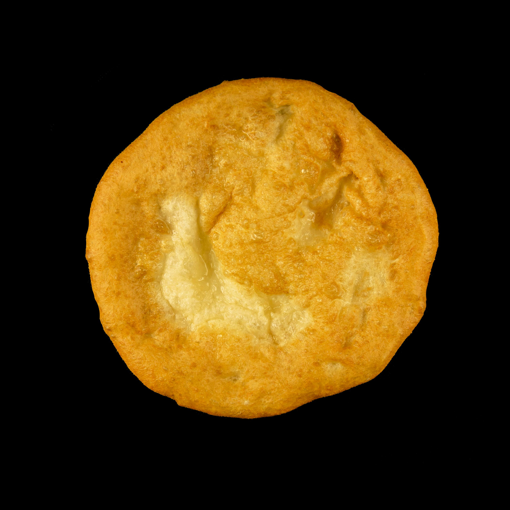

WANDER WOMEN
WANDER WOMEN
TRANSYLVANIA Regional Guide
So much more than vampires
Top Tourist Spots
The region's storied past is evident in its well-preserved medieval architecture, such as the fortified churches of the Saxon villages and the historic Sighisoara Citadel.
Bran Castle
The National Museum of Ethnography
St. Micheal's Church
Holy Trinity Church--Sighisoara
Sighisoara Clock Tower
Vlad Dracul House
Cultural Encounters
Explore Transylvania's rich tapestry of cultures, where diverse communities, languages, and traditions converge, offering a unique blend of history and heritage.
Romani People
The Romani, or Roma, constitute approximately 2% of Transylvania's population, with many residing in the Székely regions. They speak Romanian, Hungarian, and their traditional Romani language, contributing significantly to the region's cultural mosaic.
Székely People
The Székelys are a Hungarian subgroup predominantly residing in eastern Transylvania. They are recognized as a distinct minority group, with estimates of their population ranging from 500,000 to 700,000.
Languages
Romanian is the official language, but Hungarian is widely spoken, especially among the Székelys. The Romani language is also present, reflecting the region's ethnic diversity.
Bears in Transylvania

Transylvania is renowned for its significant brown bear population, offering unique wildlife experiences in its dense forests.
Traditional Clothing
Traditional attire varies among communities; for example, the Székelys have distinct costumes characterized by embroidered shirts and felt hats, reflecting their Hungarian heritage.
Holocaust and Cold War History
Transylvania's complex history includes periods of persecution, notably during the Holocaust, where many Jews faced discrimination and deportation. The Cold War era saw Transylvania as a region of geopolitical interest, influencing its political and social landscape.
Gastronomic Delights
Transylvanian cuisine is a flavorful fusion of Hungarian, Romanian, and Saxon influences, featuring hearty dishes like goulash, stuffed cabbage, and polenta, reflecting the region's rich cultural tapestry.
To Eat
- Fasole Batuta:
A traditional Romanian dish, Fasole Bătută consists of mashed white beans seasoned with garlic and served with pickled vegetables or smoked meats, offering a hearty and flavorful taste of Transylvanian cuisine.
- Csiki Csipsz:
Originating from the Székely region, Csíki Csipsz are premium potato chips known for their crispy texture and rich flavor, often enjoyed as a snack alongside local beverages.
- Harghita Beer:
Brewed in the Harghita County of Transylvania, Harghita Beer is a popular local lager appreciated for its refreshing taste and quality, reflecting the region's brewing traditions.
- Lángos:

A beloved snack in Transylvania, Lángos is a deep-fried flatbread typically topped with sour cream and grated cheese, offering a satisfying combination of flavors and textures.
- Herbal Infusions:
Freshly squeezed orange juice is a popular beverage in Morocco, especially in Marrakesh, where the abundance of citrus groves ensures a sweet and refreshing drink.
Restaurants
- Bunt Bistro
- Samsara Foodhouse
- Gasthaus Altepost
Where to Stay
Staying in a riad offers an authentic experience of Marrakesh's unique architecture and hospitality, providing a tranquil retreat amidst the city's vibrant life.
Retro Hostel
Located in Cluj-Napoca's historic center, Retro Hostel is just a 2-minute walk from the main square. Established in 2002, this family-run hostel combines traditional Romanian décor with modern comforts, featuring clean, homely rooms, free bicycle rentals, and a sauna. Its proximity to local attractions and vibrant nightlife makes it a popular choice for travelers.
Sighișoara Citadel
Sighișoara's Citadel is a UNESCO World Heritage site with narrow cobblestone streets, colorful buildings, and historic towers. The area is safe and offers a unique medieval atmosphere.
Brașov Old Towne
Brașov's Old Town is a pedestrian-friendly area with charming streets, historic buildings, and lively squares. It's considered very safe for solo travelers, offering a range of accommodations and dining options.
Souvenir Ideas
Things to remember Transylvania by:
Handcrafted Wooden Spoons
Artisans in Transylvania create beautiful wooden spoons with intricate carvings, reflecting the region's rich woodworking tradition.
Traditional Beaded Jewelry
Colorful beaded necklaces and bracelets are handcrafted by local artisans, showcasing traditional Romanian designs and patterns.
Lavender Products
Transylvania's lavender fields inspire a range of products, including soaps, essential oils, and sachets, offering a fragrant reminder of the region's natural beauty.
Handwoven Textiles
Locally woven textiles such as tablecloths, towels, and blankets, often featuring traditional patterns and vibrant colors, make for practical and beautiful souvenirs.
Pottery
Handcrafted pottery, including mugs, plates, and decorative items, often adorned with traditional motifs, reflects the region's rich ceramic heritage.
Staying Safe
To do:
1: Have Fun
2: Stay Safe
General Safety
Romania, including Transylvania, has a lower incidence of violent crime compared to Western Europe. Nonetheless, it's prudent to exercise standard safety measures:
- Keep your belongings secure and be mindful of your surroundings, especially in crowded areas.
- Use reputable transportation services and avoid isolated regions after dark.
- Select accommodations in well-trafficked, well-lit areas, and consider reading reviews focusing on safety aspects.
Bear Safety
Transylvania's Carpathian Mountains are home to a significant brown bear population. To minimize risks:
- Stick to marked trails and avoid hiking alone, especially in remote forested areas.
- Carry bear deterrents, such as bear spray, when venturing into bear-populated regions.
- If you encounter a bear, remain calm, avoid direct eye contact, and slowly back away without turning your back.
Respecting Romani Culture
Transylvania hosts diverse communities, including the Romani people. To ensure respectful interactions:
- Approach cultural differences with sensitivity and avoid perpetuating stereotypes.
- Seek permission before photographing individuals, particularly within Romani communities, as some may find it intrusive.
- Engage with local culture through guided tours or cultural experiences led by knowledgeable locals to gain authentic insights.
Stay Informed and Prepared
- Know Emergency Contacts: Keep a list of emergency contacts, including local authorities and your country's embassy or consulate.
- Trust Your Instincts: If a situation or area feels uncomfortable, trust your instincts and remove yourself from it. Prioritize your safety at all times.
Embassy and Contact Information
- Address: 4-6 Dr. Liviu Librescu Boulevard, Sector 1, Bucharest 015118, Romania
- Phone: +40 21 200 3300
- Emergency After-Hours Phone: +40 21 200 3300
- Fax: +40 21 200 3442
- Email: ACSBucharest@state.gov
- Website: U.S. Embassy Bucharest
- More Info Before You Go
Tours + Parties
Can't miss events across Tranyslvania:
Cluj: Turda Salt Mine, Corvin Castle, Alba Carolina Tour
Language
Romania and Hungarian
Practice
Romanian Phrases:
- Bună ziua: Hello / Good afternoon.
- Bună dimineața: Good morning.
- Bună seara: Good evening.
- La revedere: Goodbye.
- Mulțumesc: Thank you.
- Vă rog: Please.
- Da: Yes.
- Nu: No.
- Vorbiți engleză? Do you speak English?
Hungarian Phrases:
- Helló: Hello.
- Jó reggelt: Good morning.
- Jó napot: Good afternoon.
- Viszontlátásra: Goodbye.
- Köszönöm: Thank you.
- Kérem: Please.
- Igen: Yes.
- Nem: No.
- Beszél angolul? Do you speak English?
Language Learning Resources:
- Duolingo: A free app to learn Romanian with interactive lessons. [Learn Romanian on Duolingo](https://www.duolingo.com/course/ro/en/Learn-Romanian)
- Rosetta Stone: Offers comprehensive Romanian courses with immersive learning methods. [Learn Romanian with Rosetta Stone](https://www.rosettastone.com/learn-romanian/)
- RomanianPod101: Provides audio and video lessons for learners at all levels. [Learn Romanian with RomanianPod101](https://www.romanianpod101.com/)
- Memrise: Offers courses in Romanian, focusing on vocabulary and practical usage. [Learn Romanian with Memrise](https://www.memrise.com/course/2021576/learn-romanian/)
- Busuu: A language learning platform offering Romanian courses with feedback from native speakers. [Learn Romanian with Busuu](https://www.busuu.com/en/course/learn-romanian)